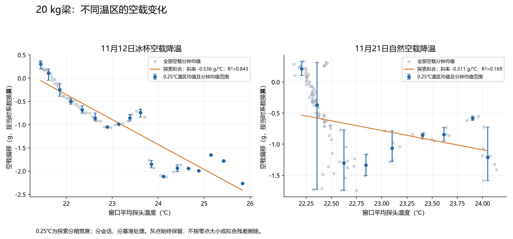
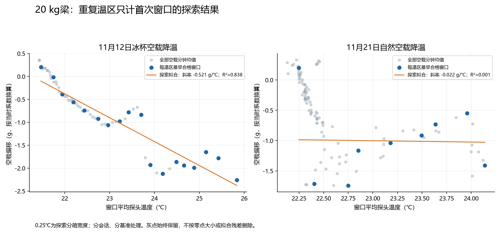
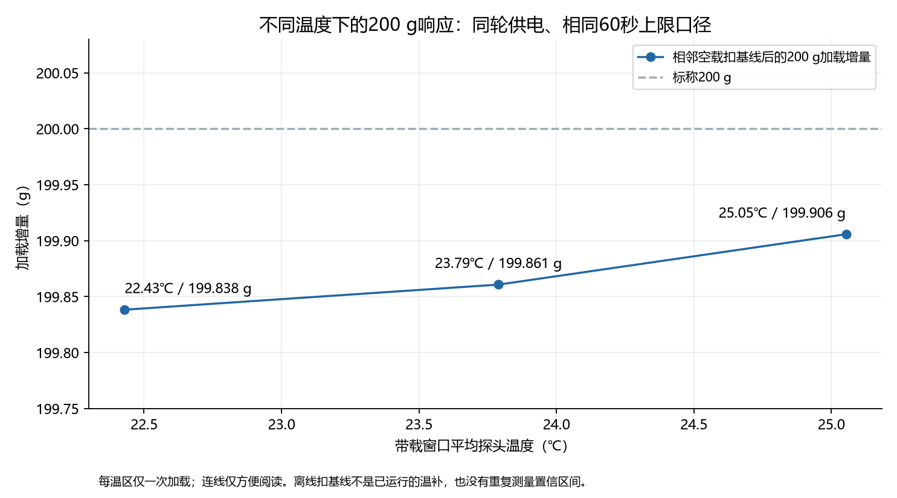

20 kg梁：不同温区探索分析
2026年11月25日 · 两份符合温差条件的空载记录 · 事后探索
结果
冰杯降温那轮仍有明显相关走势；自然降温那轮减少重复温区后，关系依然较弱。不能靠这一处理得到通用温补参数。
主图按0.25℃温区取均值，保留区内范围；另取每温区最早窗口做对照。筛选只看温度和时间，不按零点大小挑点。原始及全量分析保留。
温区汇总：每温区一个均值，保留范围

重复温区不反复计入：按最早时间选窗口

不同温度下的200 g加载响应

全部口径对照
| 记录 | 方法 | 宽度/℃ | 点数 | 斜率/(g/℃) | R² |
|---|
| 11月12日冰杯空载降温 | 全部空载分钟 | 全量 | 58 | -0.5916 | 0.8643 |
| 11月12日冰杯空载降温 | 温区均值 | 0.25 | 18 | -0.5363 | 0.8429 |
| 11月12日冰杯空载降温 | 每温区首次窗口 | 0.25 | 18 | -0.5213 | 0.8379 |
| 11月12日冰杯空载降温 | 温区均值 | 0.5 | 10 | -0.5451 | 0.9095 |
| 11月12日冰杯空载降温 | 每温区首次窗口 | 0.5 | 10 | -0.5152 | 0.8718 |
| 11月21日自然空载降温 | 全部空载分钟 | 全量 | 109 | -0.5484 | 0.2598 |
| 11月21日自然空载降温 | 温区均值 | 0.25 | 9 | -0.3108 | 0.1688 |
| 11月21日自然空载降温 | 每温区首次窗口 | 0.25 | 9 | -0.0219 | 0.0006 |
| 11月21日自然空载降温 | 温区均值 | 0.5 | 5 | -0.2417 | 0.1824 |
| 11月21日自然空载降温 | 每温区首次窗口 | 0.5 | 5 | +0.3422 | 0.3142 |
分箱均值与首次窗口均为同批历史数据的不同表示，点数减少或R²升高不等于独立补偿验证。